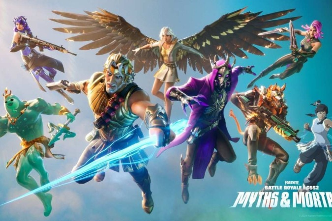

Fortnite é conhecido por suas temporadas emocionantes e cheias de conteúdo. Cada temporada traz novidades significativas para o jogo, incluindo novos mapas, skins, armas, eventos e mecânicas de jogo. A estrutura de temporadas permite que os desenvolvedores mantenham o jogo fresco e emocionante para os jogadores, incentivando-os a voltar regularmente para experimentar o que há de novo. Cada temporada geralmente dura cerca de 10 semanas e é tematicamente única, com um enredo que se desenrola ao longo do período. Por exemplo, uma temporada pode introduzir uma invasão alienígena no mapa, enquanto outra temporada pode ter um tema de super-heróis. Esses temas não apenas mudam a estética do jogo, mas também introduzem novas mecânicas de jogo relacionadas à história da temporada.
Voltar